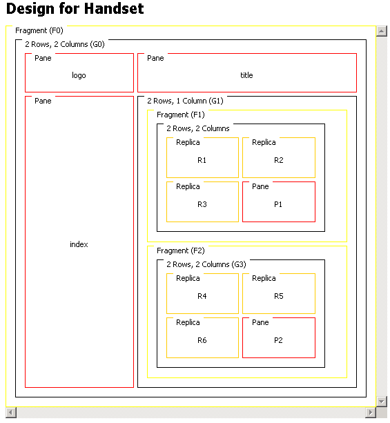

Fragmented pages often have features that you want to apply to all fragments, for example common navigation and menu bars.
You can use a replica format to use content from another format in another part of the layout. You refer to the other format using the replica's Source Format Name attribute.
The source format you refer to in a replica must be in a different fragment to the one containing the replica. This is because MCS continues to use the pane name in the source format when it replaces the replica. In addition, pane names must remain unique.
In the figure, the logo, title, and index panes contain material that is needed in all three fragments. The panes are part of the default fragment, F0, so MCS will be render them whenever F0 is visited. They are also needed in fragments F1 and F2.
Replica R1 refers to the logo pane, and when fragment F1 is rendered, R1 is replaced by the logo pane. The same is true for replicas R2 and R3 which MCS replaces with the title and index panes. When MCS renders fragment F2, which has identical references, the three panes are displayed in the same way.

Related information
Canvas layouts
and panes
Fragments